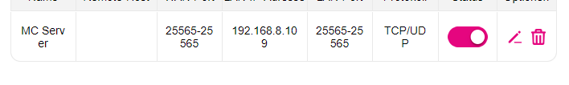

Ich versuche meinen Minecraft Server über den port 25565 freizuschalten. Ich bin auf das Panel meines Routers (Huawei 5G CPE Pro2) gegangen habe dort einen Virtuellen Server erstellt. Kann mich aber nun nicht mit meiner IP 46.000.000.000 (Business APN) zum Server verbinden.

Hi
@MyNxmeLuca
Hast du versucht dich innerhalb von deinem lokalen Netzwerk mit der 46.000.000.000 IP-Adresse auf den Minecraft Server zu verbinden oder hast du den Test über einen anderen Internet-Anschluss durchgeführt?
Wenn du es innerhalb von einem Heimnetzwerk getestet hast, wird es nicht funktionieren, weil der Router nicht die Funktion hat die Daten dann wieder zurück in dein Heimnetzwerk umzuleiten.
Test mit der öffentlichen IP-Adresse des Routers (die 46.000.000.000 Adresse sollten von einem anderen Internet-Anschluss durchgeführt werden. Innerhalb vom Magenta-Mobilfunknetz kann es außerdem nötig sein, dass beide Internet-Anschlüsse den Business APN verwenden.
Kannst du den Minecraft Server in deinem lokalen Netzwerk erreichen, wenn du die IP-Adresse des Gerätes verwendest, auf dem der Server läuft?
LG NTM
Am 27.1.2023 um 22:53 schrieb NTM:
Hi
@MyNxmeLuca
Hast du versucht dich innerhalb von deinem lokalen Netzwerk mit der 46.000.000.000 IP-Adresse auf den Minecraft Server zu verbinden oder hast du den Test über einen anderen Internet-Anschluss durchgeführt?
Wenn du es innerhalb von einem Heimnetzwerk getestet hast, wird es nicht funktionieren, weil der Router nicht die Funktion hat die Daten dann wieder zurück in dein Heimnetzwerk umzuleiten.
Test mit der öffentlichen IP-Adresse des Routers (die 46.000.000.000 Adresse sollten von einem anderen Internet-Anschluss durchgeführt werden. Innerhalb vom Magenta-Mobilfunknetz kann es außerdem nötig sein, dass beide Internet-Anschlüsse den Business APN verwenden.
Kannst du den Minecraft Server in deinem lokalen Netzwerk erreichen, wenn du die IP-Adresse des Gerätes verwendest, auf dem der Server läuft?
LG NTM
Ich hatte es ca. 20 Minuten nachdem ich den Post geschrieben habe selbst herausgefunden. Aber trzd danke
")
{kind=link}